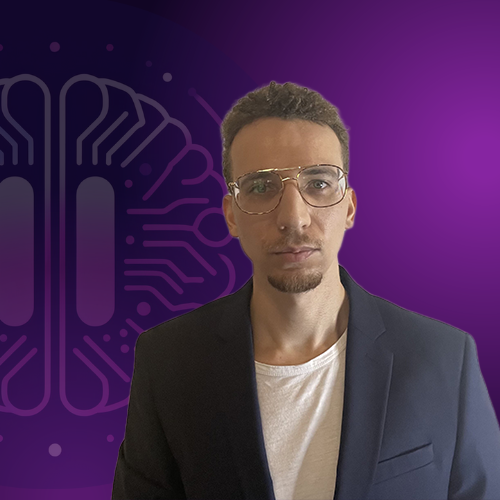

About Me
Adrien Hopkinson is an analyst and product manager specializing in driving product growth and development within conversational AI.
A self-starter who works across teams in challenging, high-paced environments, Adrien gets his hands dirty to ensure clean, meaningful work on the other end.
Recent Work Sample Recognition